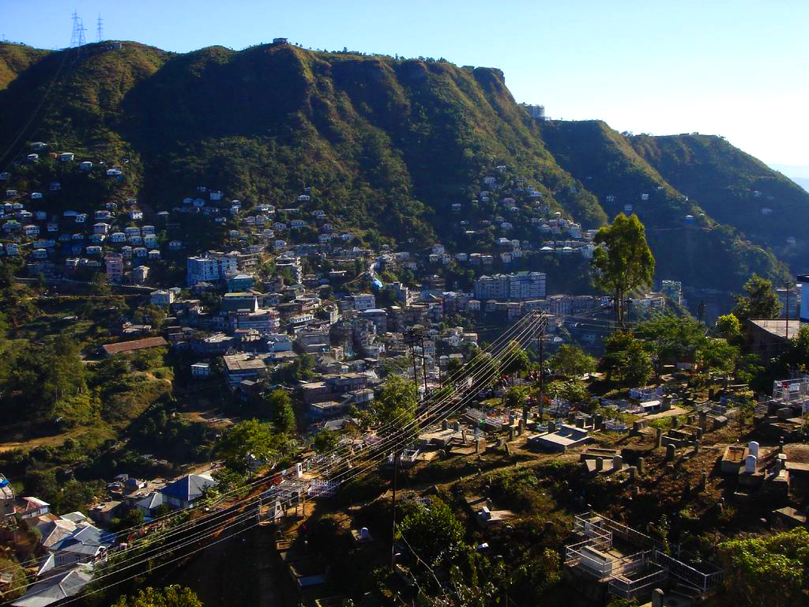
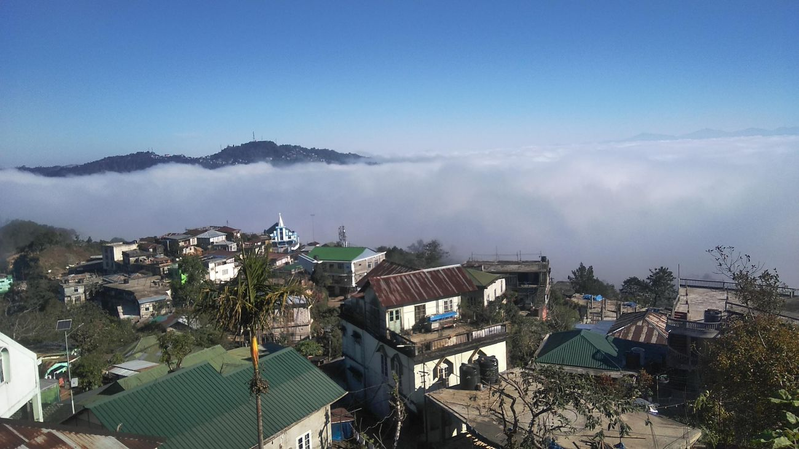
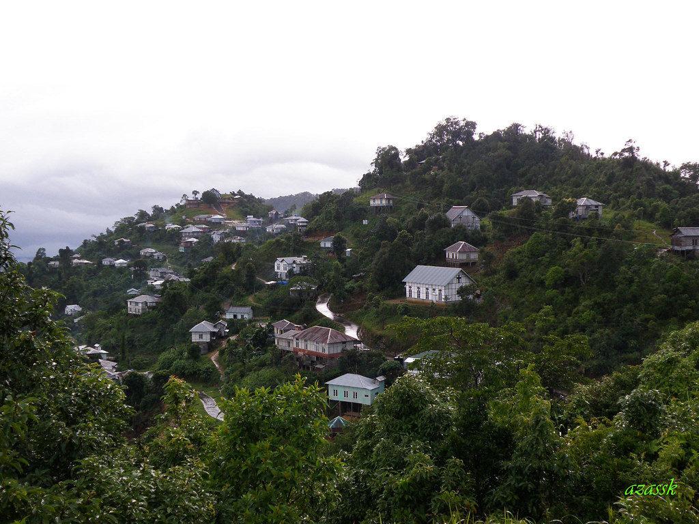
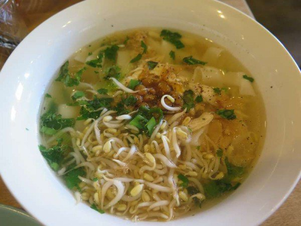
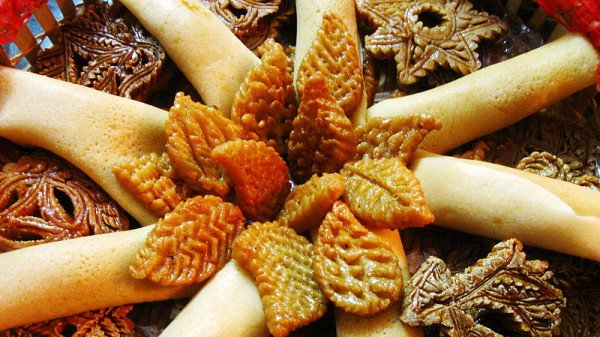
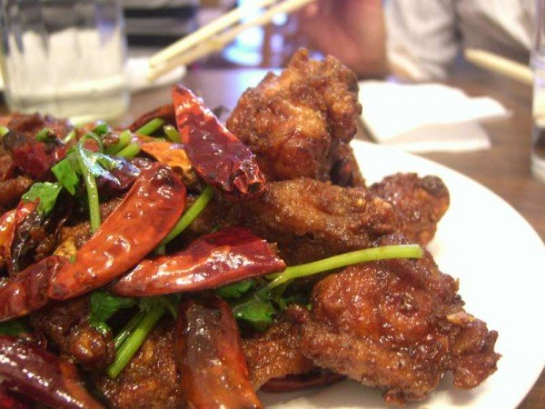
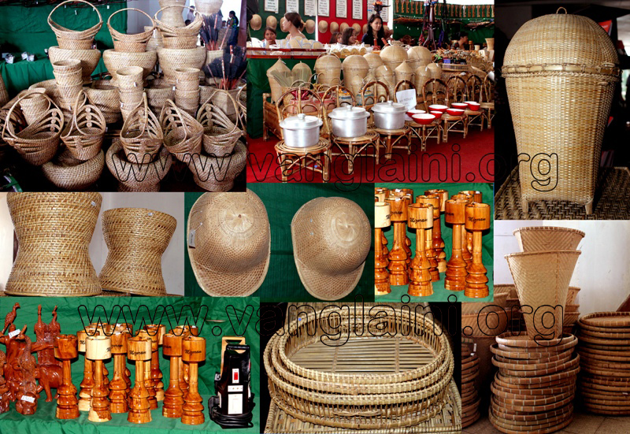
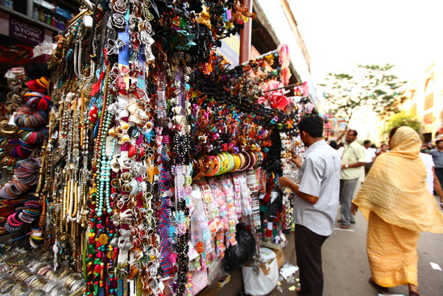

Among one of the oldest cities within the north eastern region of India, with an elevated setting and breathless views, Aizawl may be a peaceful very little city although it is the capital of the state. it’d be most likelyone in every of the foremost peaceful state capitals in India
Aizawl, pronounced eye-zole, may be a good place to relax whereas enjoying the native food and culture.
Home to the Mizoram State deposit and few alternative traveler complexes, tourists have few choices to get pleasure from a looking tour within the town. Excluding these, one will take a tour to the near unsmooth areas of Hmuifang, Tamdil Lake and Chanmari.
Literally which means ‘the bridge of rock’, Lunglei is legendary for its scenic beauty and natural setting. it’s a perfect destination if one desires to require a possibility and appearance away, towards nature’s easy offerings.
Trekking, bird looking and journey sports are oftentimes enjoyed by tourists.This city is placed within the southern part of the state of Mizoram, and got its name when the particular bridge like rock found here
The world doesn’t have several typical traveler attractions however the natural beauty, cool weather, scenic views for their absence restore it as a well-liked traveler destination. The city is additionally standard since it’s near to the town of Aizawl.
The Mamit district is the fourth largest district of the state of Mizoram. Best-known for its exquisite scenic locales and magnificence, do not miss bent on add this place in your itinerary in Mizoram.
It is flanked on the north by Hailakandi district of Assam state, on the west by North Tripura district of Tripura state and Bangladesh, on the south by Lunglei district and on the east by Kolasib and Aizawl districts.
This is one of the most popular dishes of Mizoram. The key factor of this dish is that it is prepared using lots of locally available herbs and spices.
The main ingredients include pork, bamboo shoots and steamed vegetables.
Wherever you go within Mizoram, Bai is one dish that you will find very easily! Some even consume this as a soup, before starting off with their main course.
Koat Pitha is essentially a fried dish. It is made using rice flour and bananas. They also add fish to it, as it is considered to be one of their staples. It looks crispy from the outside but is soft and warm from the inside
It makes for an ideal snack with tea. It generally tastes a little sweet because of the presence of bananas.
This dish is also very popular in Mizoram and is prepared in several places. It can be made in vegetarian or non-vegetarian fashion. In the vegetarian version, it is made with brinjal, pumpkins and potatoes.
In the non-vegetarian version, it is mostly prepared with chicken. True to its name, it is spiced perfectly well.
Apart from these dishes, what you must also try while in Mizoram, are their two popular drinks. One of them is Zu, or the local tea which they like to drink with almost every meal. The second is the Lubrusca grape wine, which is another favourite among the locals.
If you are looking to go shopping for souvenirs, buy the Khumbeu ceremonial bamboo hat, made of waterproof wild Hnathial leaves. Bara Bazaar is the main shopping market of Aizawl, where all handicraft and handloom items are sold.
The other shopping markets in Mizoram are New Market, Ritz Market, Bazar Bungkawn, Thakthing Bazar, Burma Lane and Solomon Cave.
